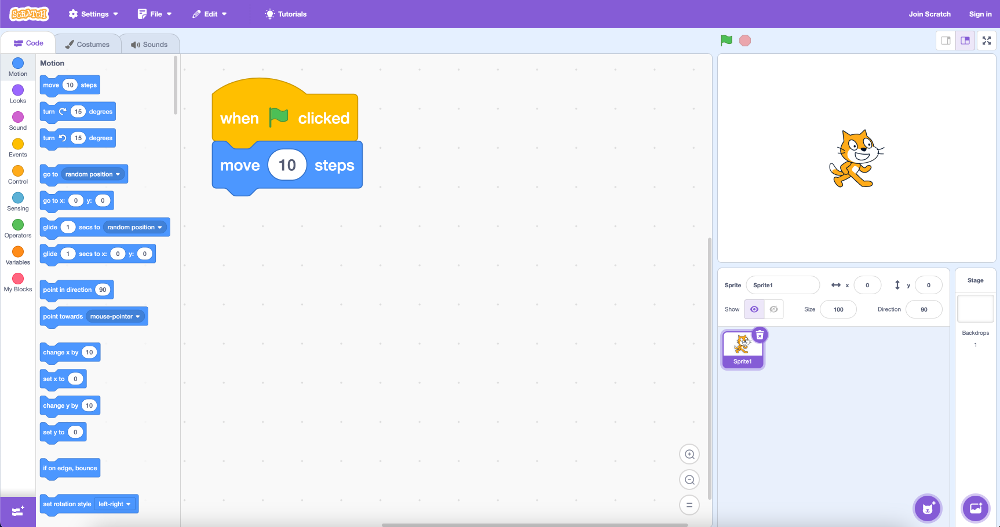
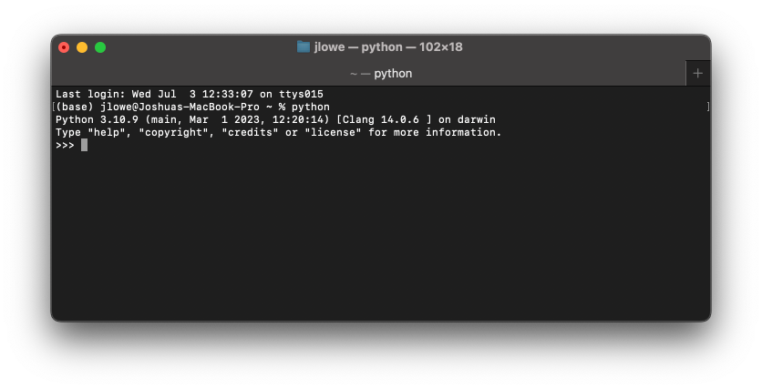
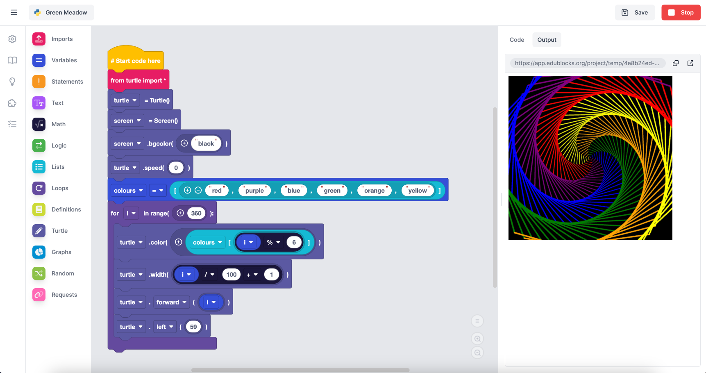
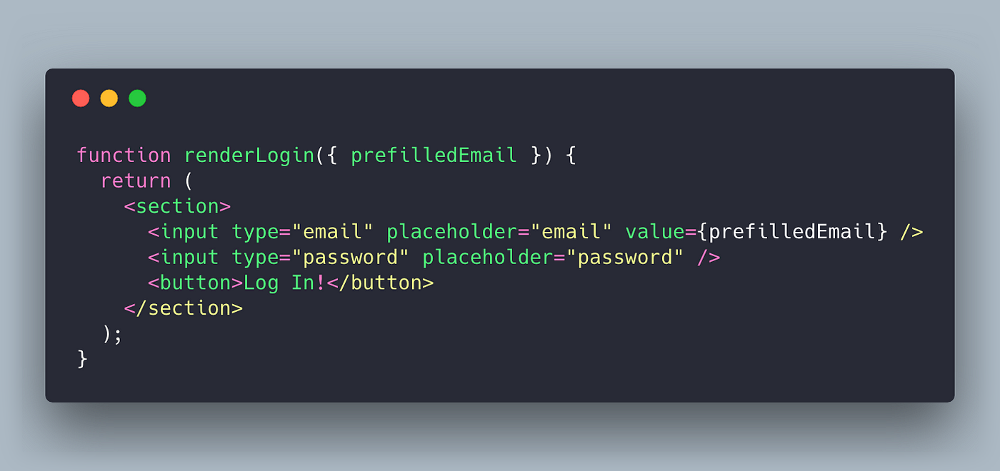
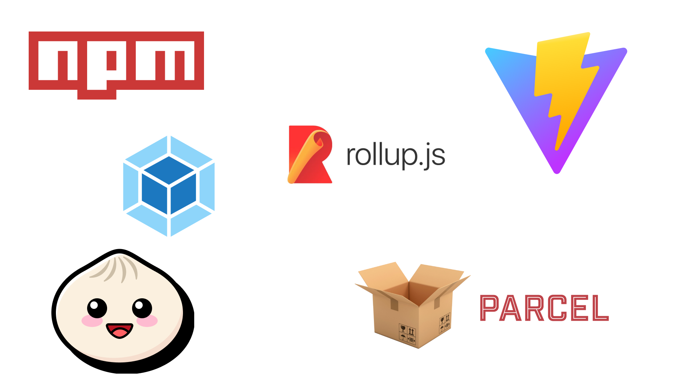
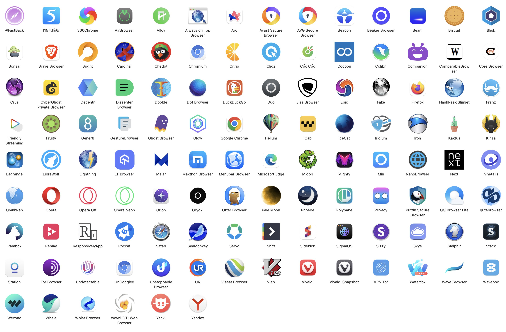

Invent with PyScript
🪄🎩🐍📜
Josh Lowe & Nicholas H.Tollervey
|
2023 |
2024 |
| Size |
500k 🐘 |
40k 🐁 |
| Runtimes |
Pyodide |
Pyodide,
MicroPython
(🧪 R, Ruby, Lua ⚗️)
|
| Concurrency |
❌ No |
✅ Workers |
| Platforms |
🖥️ 💻 |
🖥️ 💻 📱 🚘 📟 🌍 ⁉️ |
| Community |
🧑💻 |
👩🎓👨🏽👩👴🤹🏾♀️🧑🏿💻🧑🏻💼🤖 |
| Tooling |
 |
pyscript.com
 codespaces codespaces |
"For the 99%..." 💗 Peter
"If you want folks to learn how to code, don't teach them a programming language..." 💗 Martin 🎶🎷








Core Concepts
An Invent application is made of this:
- Pages contain components
used in the app 📱 🎚️ ▶️
- Media are assets used
by the app. 🖼️ 🎶 🎥
- Functions define custom
behaviour. ⚙️💪
- Channels carry messages to
coordinate behaviour. 💬📡
- Datastore keeps state, stores
key/value data. ✍️ 📖
- Tasks do background stuff
then store results in datastore. 🚚 📦
Try it!
PyScript is Ready...
🐍📜
Go INVENT!
🪄🎩